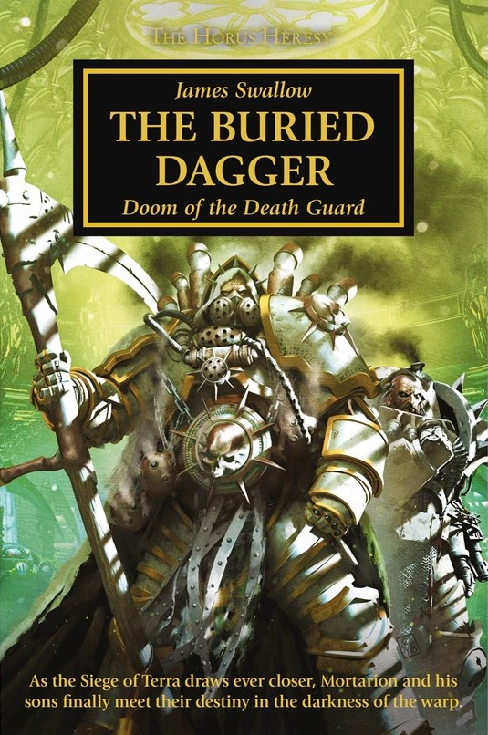

THE BURIED DAGGER

Author: James Swallow
Format: Novel
Sent ahead as the Warmaster's vanguard, Mortarion's fleet becomes lost in the warp and a terrible sickness takes hold of the supposedly unbreakable Death Guard. Meanwhile, in the cloisters of Holy Terra, Malcador the Sigillite uncovers a plot meant to sow sedition and carnage ahead of Horus's armies, and turns to his Knights-Errant to stop it.
Introduction reviewed against Black Library’s description on 2026-09-27. The publisher page may contain spoilers.
Publication facts: publisher source, checked 2026-09-26.
Open this work in the interactive Archive to track reading progress and explore related works.
Take the three-question memory check for this work. The quiz contains story spoilers.